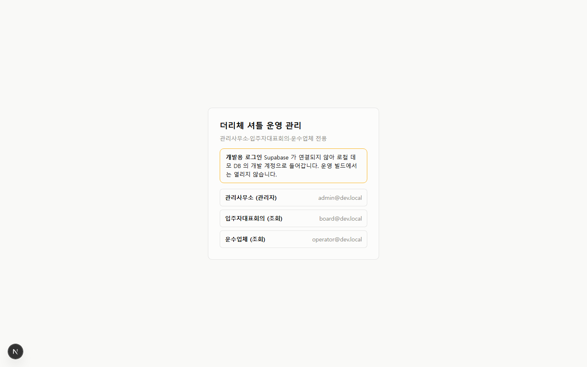

Project
The Riche Shuttle Operations
Reservation, boarding and fair cost-sharing for a 2,400-household residential shuttle

Problem
- The Riche (about 2,400 households in North Suwon) lacks transport to the nearest subway stations and to the Starfield Suwon mall.
- A resident shuttle needs one connected flow: schedules, reservations, boarding checks and usage-based billing through the maintenance fee.
- Paper rosters, cash and manual ledgers cannot split costs fairly and transparently at this scale.
Solution
- Resident app (Android, iOS)
- Residents link their household, then check and reserve trips.
- They board with a dynamic QR pass, track the bus live and request a stop.
- They can see usage and billing, and file disputes.
- Driver app (Android tablet)
- Drivers run trips and check riders in by QR or by hand.
- The app sends the bus location and queues scans while offline.
- Admin web: live operations, timetables and dispatch, households and members, billing with maintenance-fee CSV export, notices, and an operations simulator.
- Demand-responsive trips: a trip with no reservation 20 minutes before departure is cancelled. Peak commuting trips stay fixed.
- Billing: maintenance-fee shares follow actual boardings. Each closing is hashed, so the basis can be disclosed.
What I did
- Defined and decided the operating rules (routes, reservation cutoff, demand-responsive logic, fare caps) and role-based permissions.
- Used the operations simulator to compare fleet size, outsourced and in-house costs, and household burden.
- Directed implementation and verification with an AI agent (Claude Code), and kept the PRD, architecture and scenario documents up to date.
Technology & architecture
- Business rules live in the database. Reservation cutoff, seats, QR validation and billing are PostgreSQL functions and triggers, so the rules hold whatever the client.
- The database has the final say on permissions. It uses row-level security (RLS), and checks run in the UI, the server and the database.
- Testing works offline. The same migrations run on PGlite for a local demo and automated checks.
- Simulator and database agree. A simulated month is loaded into the database, and billing is compared household by household.
Next
- Connect the production Supabase project
- Apply surveyed routes and quotes
- Legal review
- Finish the remaining P0/P1 items
Progress
Last update 2026-10-21
| 구성 | 기술 | 상태 |
|---|---|---|
| DB·백엔드 | Supabase (PostgreSQL + Auth + Realtime) | ✅ 스키마·RLS·RPC |
| 더미 데이터 생성기 · 비용/요금 시뮬레이터 | Node.js (TypeScript) | ✅ |
| 관리자 웹 | Next.js | ✅ 운행 관제, 시간표·배차, 세대·회원, 정산, 공지, 운영 시뮬레이터, 로그인·역할 권한 |
| 기사용 앱 | Flutter (Android 태블릿) | ✅ 운행 진행·QR/수기 탑승·위치 전송·오프라인 스캔 대기열 ([driver_app/README.md](driver_app/README.md)) |
| 입주민 앱 | Flutter (Android · iOS) | ✅ 세대 연결·예약·동적 QR 탑승권·실시간 운행·하차 요청·이용/청구·이의 신청 ([resident_app/README.md](resident_app/README.md)) |